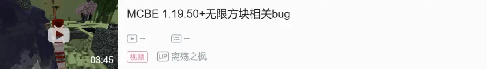

无限方块的方块变化解析1.19.50+（尚未修复）
本篇专栏主要详细解析形成无限方块时方块发生了什么变化，以及分离方块实体的原理
一，无限方块的本质
部分缩写名词解释：
mb：movingblock，移动中的方块
活塞移动方块时会直接生成mb（虽然表面上看是方块一点一点移动到向前一格的位置，但这只是mba根据活塞状态调整的渲染，实际上方块的坐标不可能有两个方块各占一半的时候）在被推动的方块活塞方向向前一格的位置
mba：movingblockactormb的方块实体
用于记录被移动的方块的信息，确保活塞推出完成之后，这个方块还是被推之前的方块
继承：一个方块和方块实体在同一个位置我们就说这个方块继承了这个方块实体
分离/保留 方块实体/mba：一个不会创建方块实体的方块继承我们要分离的方块实体
无限方块的本质以及现象的原理
一个位置存在一个不可以创建方块实体的方块，这个方块实体继承一个，内部moving block标签是这个方块的mba，
mba每gt更新时检测它记录的活塞的坐标有没有活塞，没有就把标签里的（详情请看
 站内专栏 »
站内专栏 »
movingblock（记录方块）
movingextra（记录的被包含的方块）
movingentity（记录的方块实体）
放置出来
因为原位置方块一直是无法创建方块实体的方块被替换，所以原位置mba无法被删除（因为方块实体的删除，依赖于可以创建方块实体的方块的删除），
外观体现就是每gt放置且可以被推走
二，分离mba每一步的原理
我们需要先了解活塞函数movecollidedentity(用来推实体函数)的异常行为，
这个函数只在活塞的状态为state1时每gt执行，相关了解请看
 站内专栏 »
站内专栏 »
首先我们先利用活塞先破坏所有要破坏的坐标的方块再推出所有要推出的坐标的方块的特性来推出一个空气，
这时活塞state值为1，执行movecollidedentity函数，他检查到它的推出列表其中一个坐标活塞方向向前一格的位置有空气的mba，于是就将那个坐标的方块强制往前推一次（无视方块是不是可推动的，一推就碎的），
于是那个被强制推动的方块，会被推到空气mba的位置上去，然而通过这篇专栏里描述的
站内专栏 »blocklegacy（方块基类）相同的方块被替换，原位方块实体不会被删除，
也就是说空气mba还会留在那里，
而根据mb创建mba的规则（ mb先创建默认数据mba，接下来输入各种标签的值），因为原位方块实体无法被删除，所以就跳过了创建mba，直接输入值，
结果就是那个位置的mba还是那个mba但是值被改成新的
接下来我们分析一下mb的mb（mb继承一个记录mb方块和mba的mba）被tick会发生什么
首先我们要知道mba每gt会检测自己记录的方块是不是不可推动的，如果是就设置成空气，而mb是不可推动的方块， mba被tick之后检测到他的方块标签里记录了个mb，所以就设置成空气，这时mb的mb的位置就变成了mb继承一个记录了空气和mba的mba，
接下来活塞state2/0时（推出完成或拉回完成）对这个位置正常转b（mba把内部记录的方块方块实体什么的放出来，然后因为mb方块被替换，删除了原位mba）之后，
变成空气继承mba，也就是分离了mba
三，两种分离方块实体的原理
1.分离可推动方块的方块实体：
通过先分离记录这个方块的mba（也就是对着这个方块用无限方块的方法做一遍，但是不要打掉活塞）
我们用箱子举例，那么此时这个mba记录了箱子方块和箱子方块实体以及被包含方块（被包含方块目前在我们的讲解中不重要，所以这里忽略掉）
接下来将一个不会创建方块实体的方块（比如玻璃，这里用玻璃举例）推到mba的位置，这时活塞会先在这个记录箱子的mba的位置放置mb方块，然后因为原位置已经有了一个方块实体，所以跳过创建mb方块实体，并输入值改写原位置mba的数据，
也就是说此时原位置mba被改写成记录玻璃方块和箱子方块实体，此时因为原位置是mb继承mba，可以被活塞正常转b（ mb被替换并删掉mba），
于是转b后那个位置变成，玻璃方块继承箱子方块实体，
这样就做到了可以推动方块的方块实体分离
2.分离不可推动方块的方块实体
不可推动方块（比如末地传送门方块，mb方块）
我们首先可以用推实体函数（函数movecollidedentity）的异常来推动任何方块（有1gt的放置时间）
根据mba的特性，它每gt都会检测自己记录的方块是不是不可推动的，如果是不可推动的就设置成空气，这里用末地门来举例，首先末地门被推动，mba里记录了末地门方块和末地门方块实体，
接下来它被tick，它检测到末地门方块是不可推动的方块所以设置成空气，于是mba里面就变成了记录空气和末地门方块实体，
转b放置出来后就是空气继承末地门方块实体
放下相关专栏和视频，看完之后更助于理解：
站内专栏 » 站内专栏 »
站内专栏 »
B 站专栏 »
B 站专栏 »
站内专栏 »
站内专栏 »
B 站专栏 »
B 站专栏 »

B 站视频 »笔者：樱银音
高版本无限方块发现者：panda4994
完结撒花